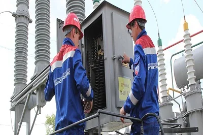
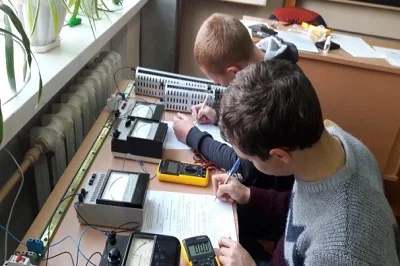
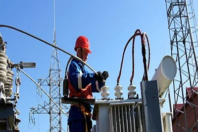

Номер: 141
Назва спеціальності:
Електроенергетика, електротехніка та електромеханіка



В основу професійної підготовки майбутніх фахівців покладено новітні інформаційні технології, особлива увага приділяється використання спеціалізованого програмного забезпечення при проектуванні електричних систем і мереж, електротехнічного обладнання, машин та систем автоматичного управління, вивченню питань розробки сучасних відновлювальних джерел енергії, застосування енергоефективних технологій. Під час навчання студенти набувають вміння з розрахунку, проектування та експлуатації електротехнічного устаткування та сучасних засобів автоматики, опановують знання з професійно-орієнтованих дисциплін, які визначають сучасний рівеньелектротехнічних систем електроспоживання та енергетичного менеджменту. Випускники займаються розробкою проектної та робочої документації електроенергетичних систем, розробкою проектної та конструкторської документації в електронній формі, розрахунком електричних схем і застосуванням спеціалізованого програмного забезпечення при проектних розрахунках, прогнозуванням навантажень і витрат електроенергії, управлінням роботою електроустаткування електростанції (підстанції), контролем роботи автоматичних систем управління енергетичними установками, проведенням енергетичних аудитів об’єктів, розробкою систем енергопостачання з нетрадиційних та відновлювальних джерел енергії.
Життя сучасного суспільства не можна уявити без наукових відкриттів в галузі електроенергетики. Рівень розвитку цієї галузі визначає стан економіки нашої країни. Професійно забезпечувати стабільну роботу енергетичного господарства та розвивати потужну енергетичну базу України покликані випускники спеціальності «Електроенергетика, електротехніка та електромеханіка».